Префектура Тояма · Куробэ · ущелье и вагончики
Ущелье Куробэ: открытые вагончики, тайные онсэны и электростанции, похожие на замки
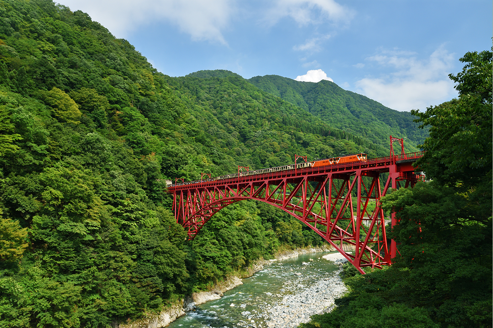
Узкоколейку в ущелье Куробэ строили для электростанций, а сегодня по ней ходят открытые вагончики с туристами. За 80 минут поезд проходит около 20 километров среди гор Северных Альп, мимо красных мостов, горячих источников и плотин, которые проектировал один из лидеров движения за современную японскую архитектуру.
Дорога
Поезд, который строили для электростанций
Ущелье Куробэ лежит почти в центре Северных Альп, в окружении самых известных вершин Японии. Здесь много воды, из скал бьют горячие источники, а по склонам идёт узкоколейка, которую когда-то проложили для строительства электростанций. Сегодня её вагончики, «торокко», возят туристов: железная дорога Kurobe Gorge Railway соединяет станцию Унадзуки в городе Куробэ с конечной станцией Кэякидайра.
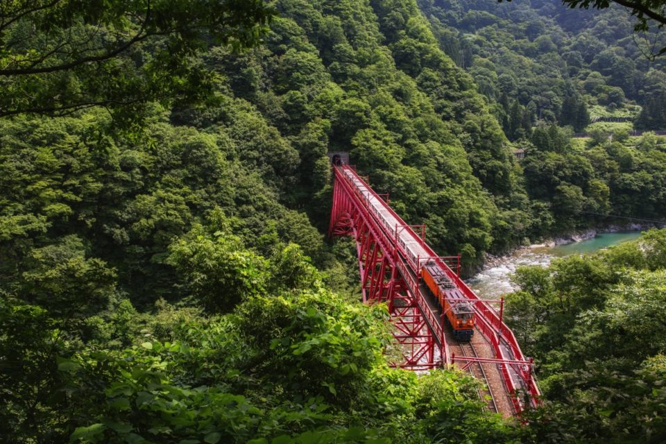
Поезда здесь классические. Среди локомотивов есть электровозы, которые работают на линии с 1935 года, а на станции Унадзуки контролёр до сих пор компостирует билеты вручную.
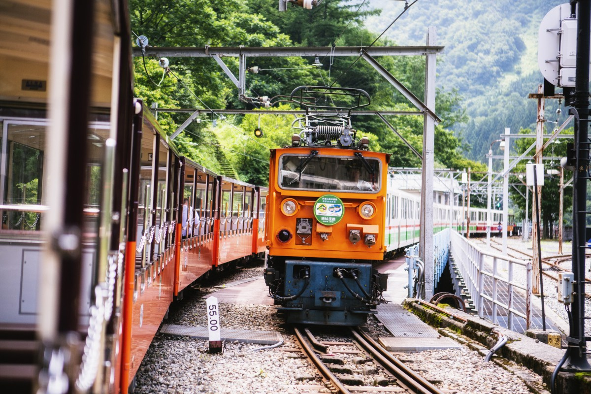
Ради чего ехать? Во-первых, ради самой дороги: покачиваться в вагончике и смотреть на ущелье. Во-вторых, ради горячих источников. А если повезёт, у путей можно увидеть японского серау, гималайского медведя или японских макак.
В пути
80 минут над рекой
От Унадзуки до Кэякидайры поезд идёт около 80 минут. В 2019 году туристам можно было выходить на четырёх станциях: Унадзуки, Куронаги, Канэцури и Кэякидайра. Лучше сначала доехать до конечной. В поезде в нужных местах звучат объявления о том, что видно за окном и чем это место знаменито, так что пропустить главное трудно.
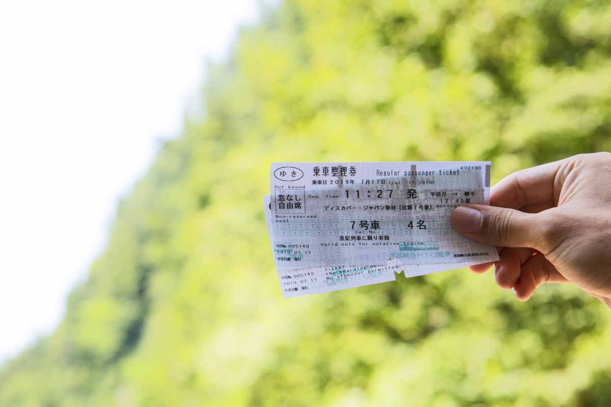
В вагонах можно есть. На станциях продают местные бэнто, и обед с видом на ущелье становится частью поездки. За 80 минут его точно успеешь доесть, а если дальше собираешься идти пешком к онсэну, то лучше пообедать именно в поезде.
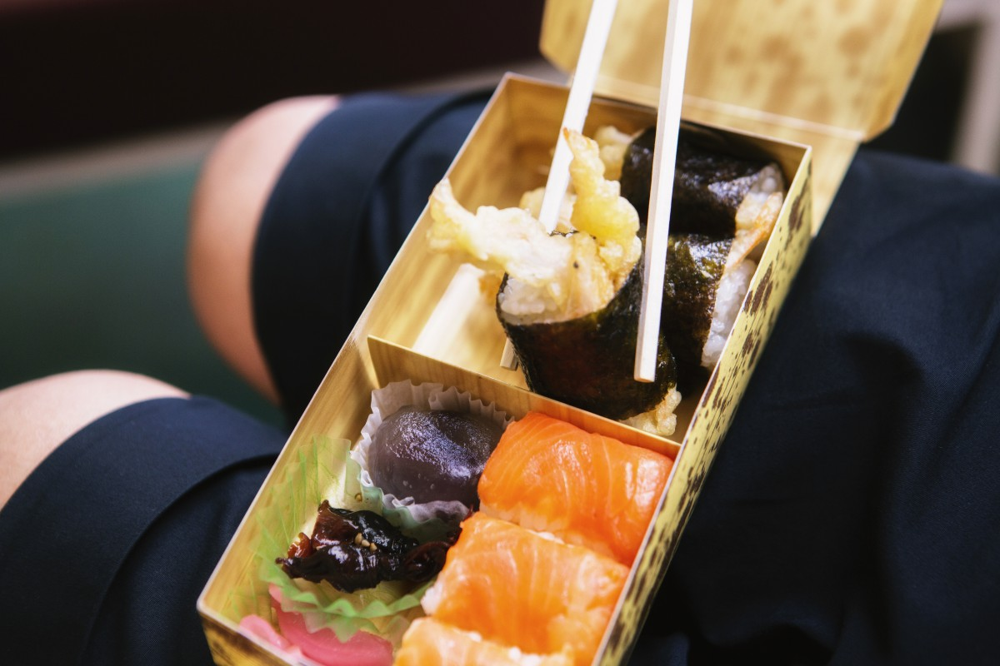
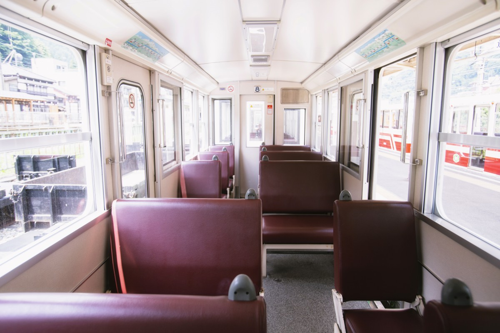
Длина линии 20,1 километра, ширина колеи 762 миллиметра. За окном проплывают красный мост Син-Ямабико, синий мост Атобики, плотина Унадзуки и озеро Унадзуки. Обычно поезда ходят с середины апреля до конца ноября.
Землетрясение на полуострове Ното 1 января 2024 года вызвало камнепады на линии, и в 2025 году поезда ходили только от Унадзуки до станции Нэкомата. Ремонт закончили к осени 2026 года, и 1 октября 2026 года движение до Кэякидайры возобновили по всей линии.
Онсэны
Тайные купальни ущелья
Ущелье Куробэ богато горячими источниками, и у трёх станций, Куронаги, Канэцури и Кэякидайры, есть свои онсэны. Самый дальний из них это Бабадани-онсэн. Среди членов «Общества защиты тайных онсэнов Японии» есть и Мэйкэн-онсэн. Историю многих здешних источников ведут с эпохи Эдо.
Долгое время пользоваться ими открыто было нельзя. Через Куробэ шли пути в соседние провинции Этиго и Синано (сегодня это префектуры Ниигата и Нагано), и разрешение открыть здесь купальни дали гораздо позже. До того источники оставались тайными: о том, чтобы спокойно в них отдыхать, речи не было, запрещалось даже заходить в эти места. Открытыми для всех онсэны стали только в эпоху Тайсё, когда на реке Куробэ начали строить электростанции. Память о той стройке и есть вагончики.
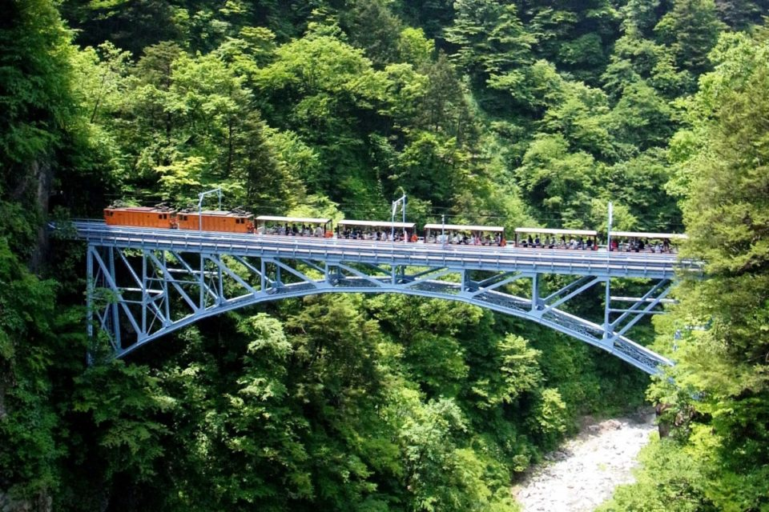
От станции Куронаги нужно минут двадцать-тридцать подниматься и спускаться по лестницам и узкой горной тропе, чтобы дойти до рёкана «Куронаги онсэн». Это самая старая гостиница ущелья, и её источник питает онсэны городка Унадзуки. Вода прозрачная и без цвета. Большая смешанная купальня под открытым небом устроена прямо в горной лощине, а для женщин есть отдельная купальня с крышей, «Тэннё-но ю», «Купальня небесной девы». Можно зайти только искупаться, а можно пообедать или остаться на ночь (по предварительной записи).
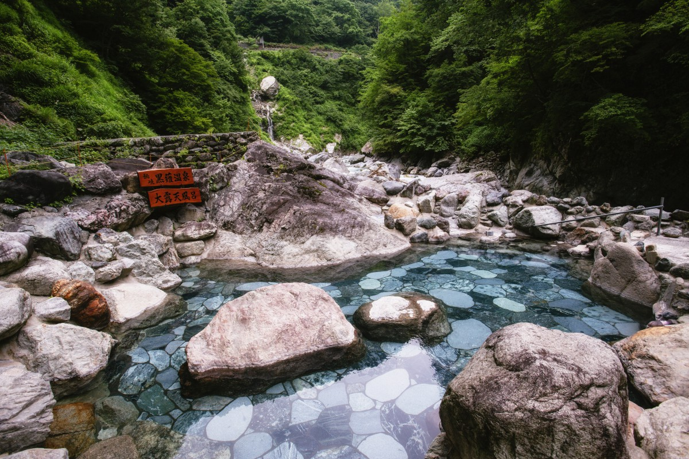
Рёкан «Куронаги онсэн»
- Часы работы
- купание без ночёвки 9:00–16:00 (вход до 15:15)
- Выходные
- с конца ноября до середины апреля (зависит от расписания поездов)
- Цены / Вход
- купание 700 иен; ночь с ужином и завтраком от 10 410 иен с человека (номер от двух человек)
- Заезд / выезд
- заезд 14:00–16:00, выезд до 10:00
- Телефон
- +81 765-62-1802
- Как добраться
- около 30 минут пешком от станции Куронаги
- Сайт
- kuronagi.jp
Это не шумный курорт. Ущелье хорошо тем, что природа подходит вплотную: свежая зелень весной, а потом краски каждого сезона прямо за окном вагончика и над купальней.
Кэякидайра
Конечная станция и тропа к Бабадани
Кэякидайра стоит на высоте 599 метров. В 2019 году отсюда шла тропа к Бабадани-онсэну, горной хижине на высоте 780 метров, которую знают как базу для восхождения на горы Сироума и Карамацу. Путь в 2,5 километра с подъёмом почти на 180 метров занимал около часа. Тропа проходит по территории национального парка Тюбу-Сангаку, мимо водопадов, а по ущелью гуляет ветер.
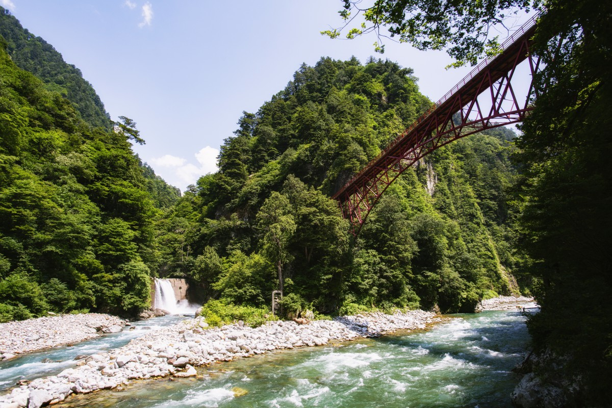
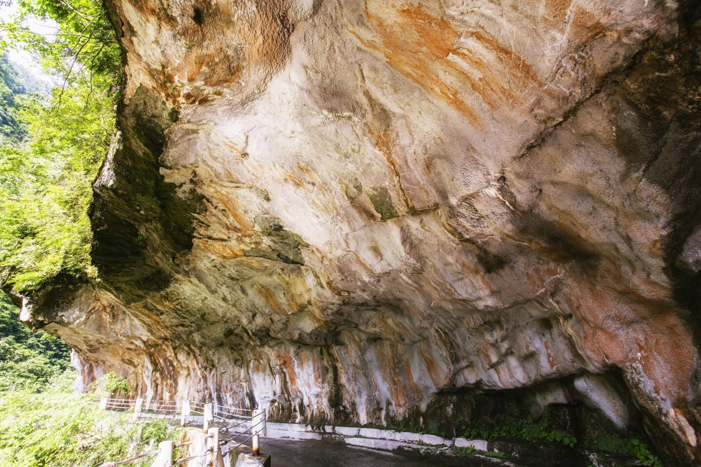
Мост Окуканэ считают лучшей смотровой точкой ущелья. Скала Хитокуи-ива получила своё имя за то, что её огромная выемка похожа на раскрытый рот, который вот-вот проглотит путника.
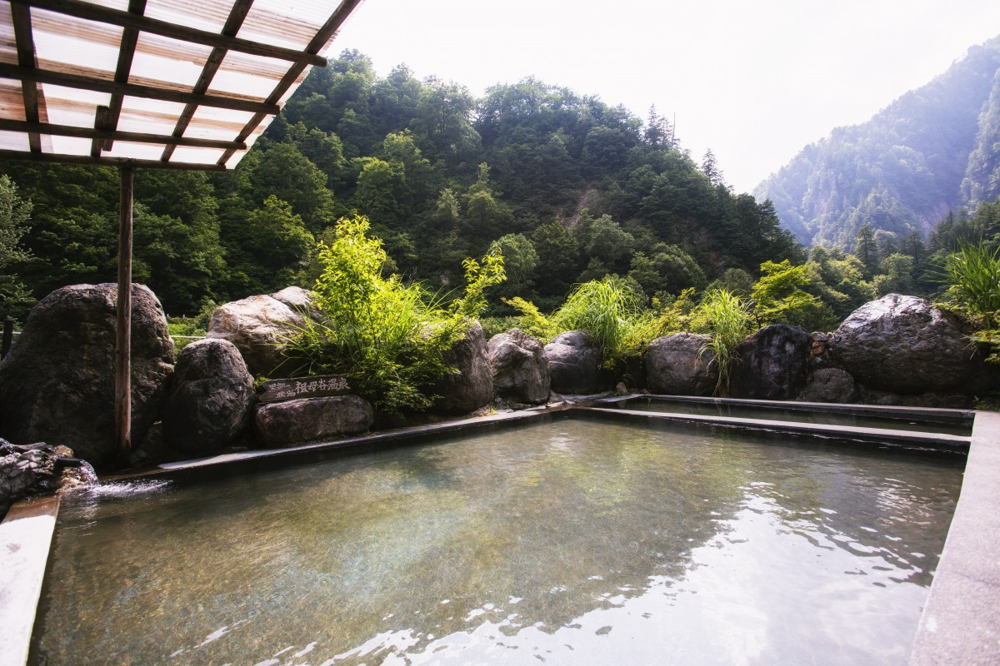
После землетрясения в Кэякидайре ещё идут восстановительные работы. В октябре 2026 года, по данным Kurobe Gorge Railway, посетители могут пройти только к станции Кэякидайра и визит-центру, а на остановку там советуют отводить около часа. Мост Окуканэ, скала Хитокуи-ива и тропа к Бабадани-онсэну в это время закрыты для посетителей.
Архитектура
Электростанции и плотины ущелья
Многоводная Куробэ с эпохи Тайсё считалась идеальной рекой для гидроэлектростанций, и из окна вагончика видно много плотин и станций. Их архитектура заметна сама по себе.
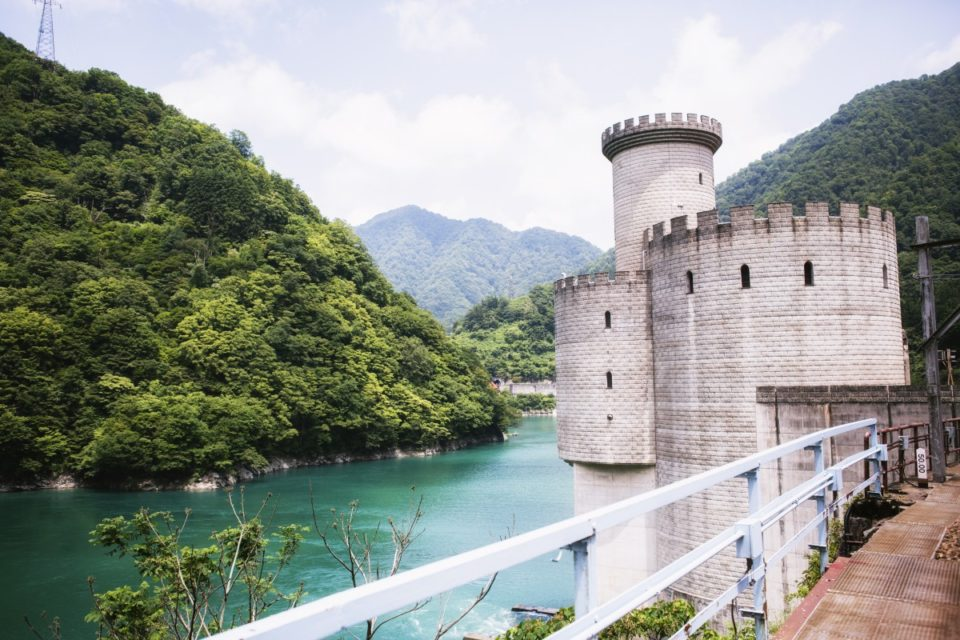
Самый яркий пример это электростанция Син-Янагавара. Когда строили плотину Унадзуки, прежнюю станцию Янагавара перенесли, а новое здание задумали как западный замок, стоящий на воде. Башни напоминают средневековые европейские сторожевые: на это стоит посмотреть хотя бы из окна.
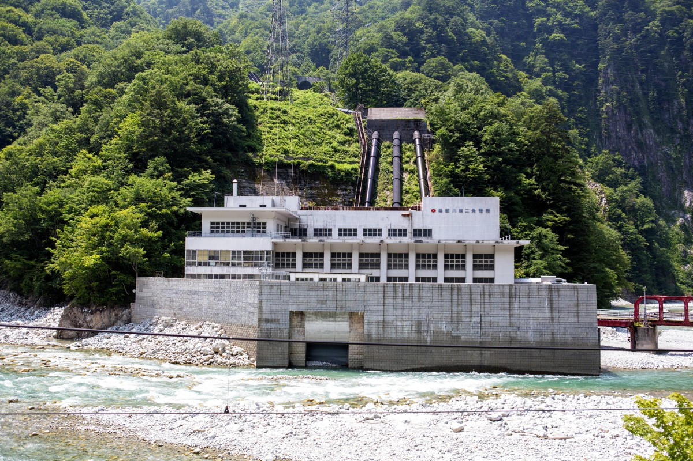
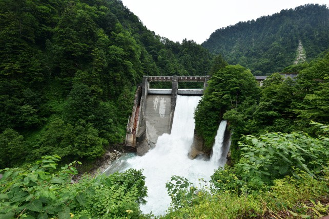
Железобетонное здание электростанции Куробэгава № 2 и плотина Коядайра спроектированы одним архитектором, Бундзо Ямагути. Его называют одним из лидеров движения за современную японскую архитектуру: он работал в духе модернизма и при этом был мастером традиционного японского зодчества.
Добавьте к этому красные мосты среди зелени, и ущелье Куробэ становится настоящим маршрутом для любителей архитектуры: здесь интересно смотреть, как инженерные сооружения уживаются с дикой природой.
Kurobe Gorge Railway
- Даты
- обычно с середины апреля до конца ноября
- Как добраться
- от станции Унадзуки до станции Кэякидайра, 20,1 км, около 80 минут
- Сайт
- kurotetu.co.jp
Фото: Хироюки Кудо, Kurobe Gorge Railway.